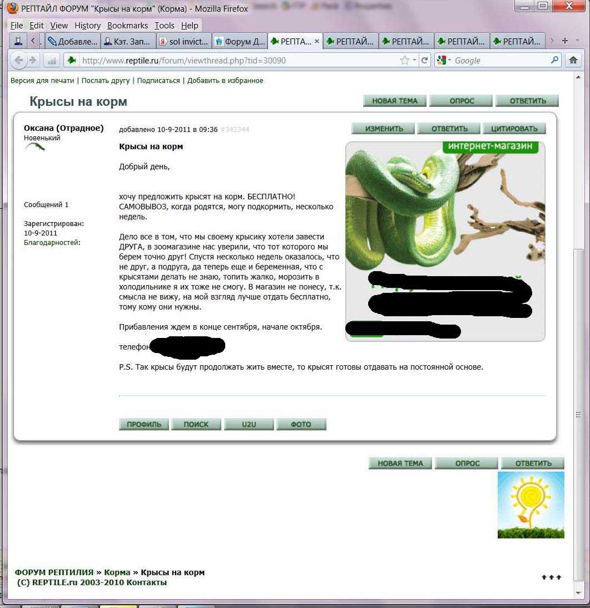
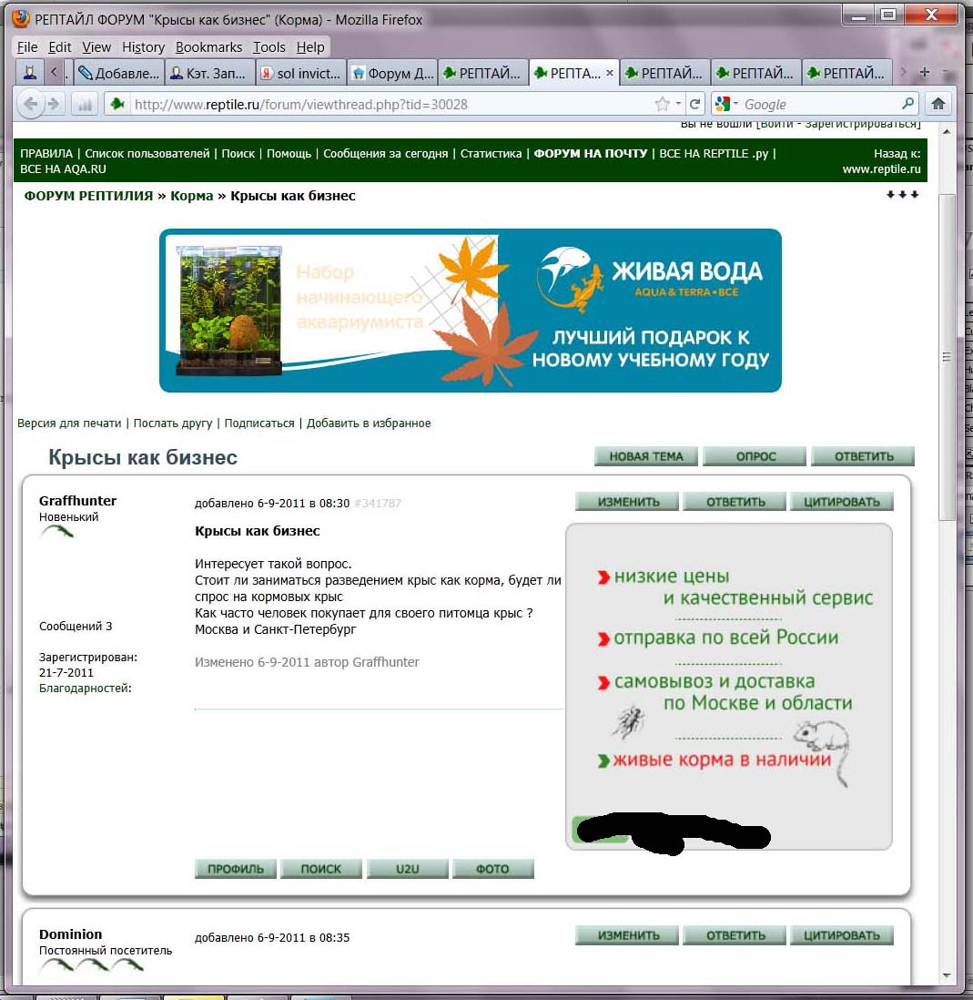
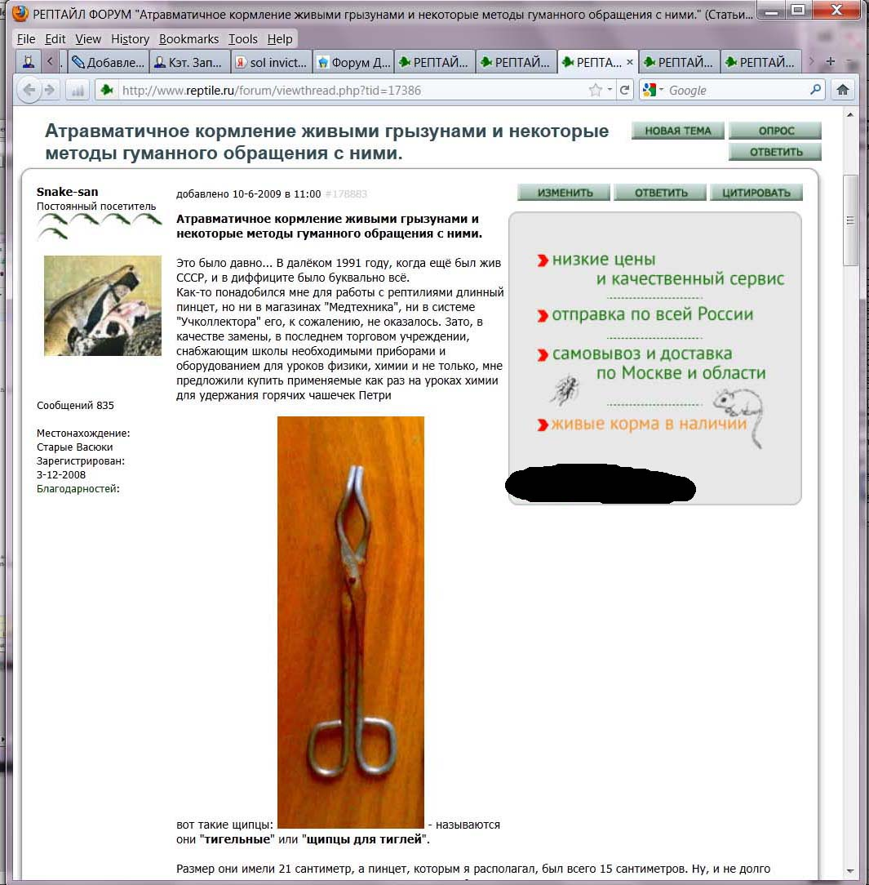
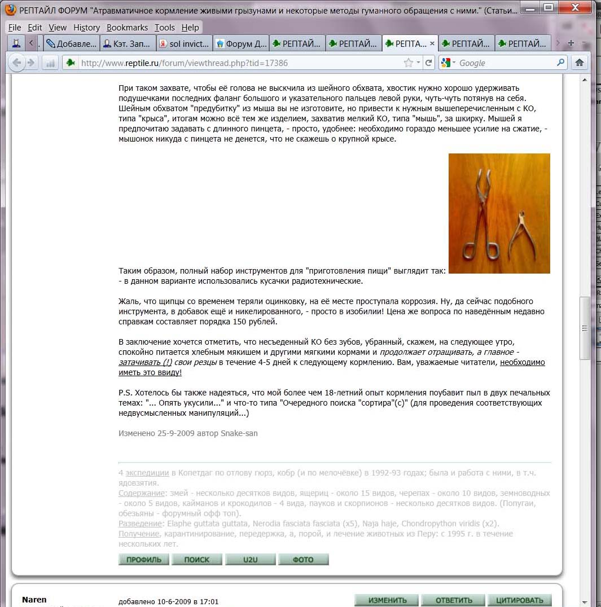
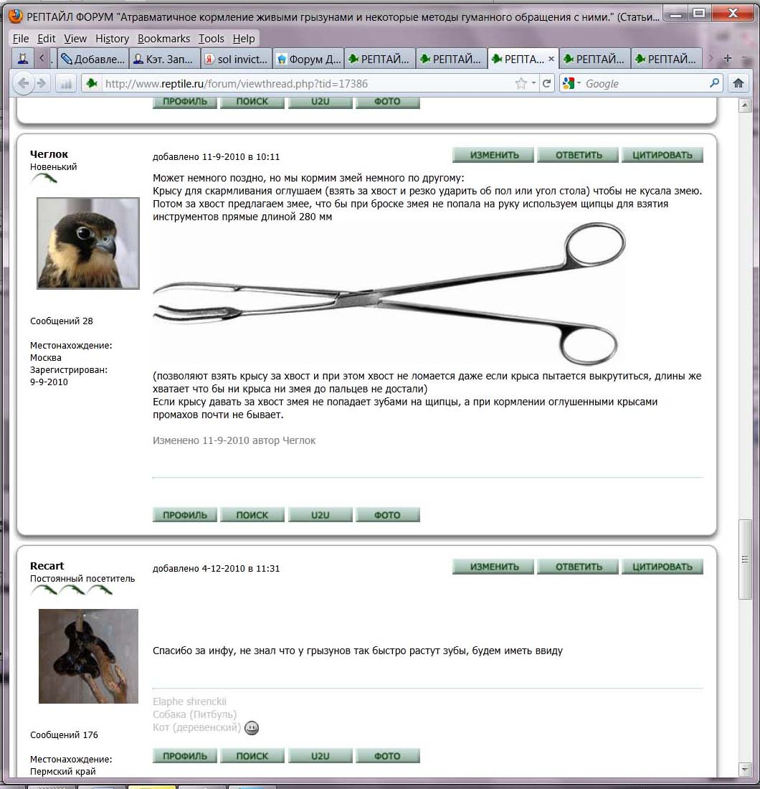
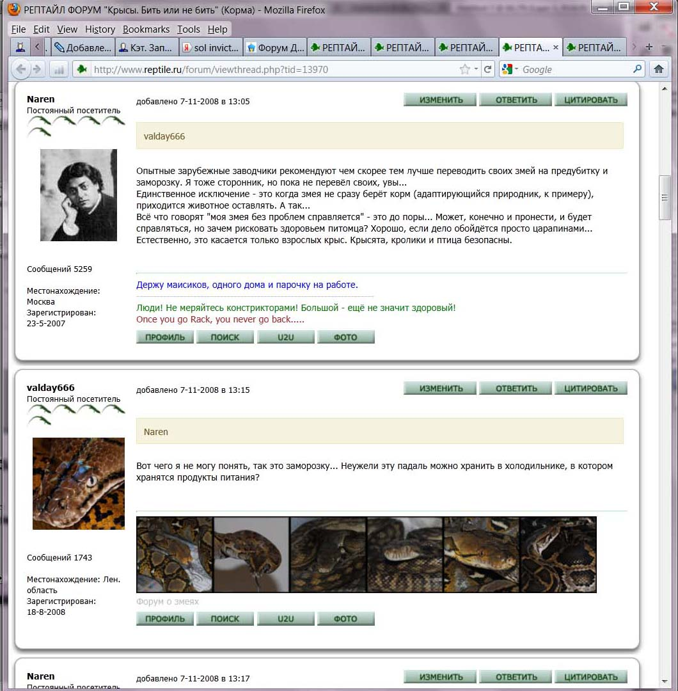
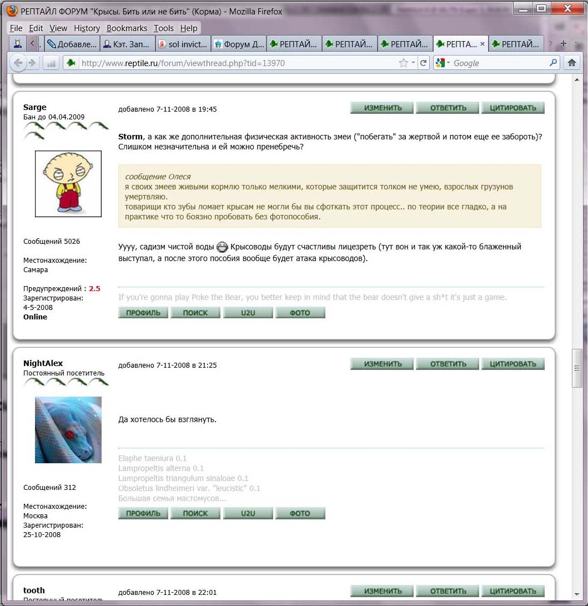

(Психопатологоанатомия IV)
Крысы — не корм!
v.1.0 (18/11/2012)
Жестокость есть всегда результат страха, слабости и трусости. К. Гельвеций |
|
Выражаю благодарность участникам форума при питомнике «Rattus Perfectus», где обсуждалась тема. Отдельный TNX Kamer’у, в тексте использован его большой пост на ту же тему. |
Тему жестокости по отношению к крысам я уже поднимал в контексте иллюстративности психики соотв. индивидов, см. «Прогибиционисты и все-все-все», раздел «Внутренний мир прогибициониста на примере О. Гоблина». К вопросам психопатологии вернёмся в конце статьи, сейчас же рассмотрим такое явление, как кормление гадов (т.е. наземных позвоночных, но не птиц и не млекопитающих) живыми зверями.
О таком обычно «что-то эдакое слышали», не более того, так что начнём с примеров. Я не буду здесь давать ссылки на соотв. видео/фото — при желании они легко находятся в интернете. Давайте рассмотрим ситуацию в разных аспектах — может, так и надо делать?
Примечание: тема достаточно «переплетённая» при подробном рассмотрении, поэтому иногда я несколько повторяюсь, а иногда тезисы могли бы относиться к разным разделам. Ничего страшного, в конце всё собирается в цельную картину.
Оглавление
- Зачем кормить именно живыми зверьками?
- Животные не равны!
- Различие зверей в культуре
- Кормление крысами противоестественно
- Зачем убивать животных?
- Высшие и низшие животные
- Домашние компаньоны
- Реплика о количестве
- Зачем гады дома?
- Гадоводы, иллюстративное
- Гадоводы, сообщество
- А ничего ты не доказал!
- P.S. Психиатрия
Зачем кормить именно живыми зверьками?
Возьмём профессиональную статью по теме:
http://myreptile.ru/forum/index.php?topic=2191.0
(это перевод: http://www.anapsid.org/prekill.html)
Melissa Kaplan, «КОРМЛЕНИЕ ПРЕДУБИТЫМИ КОРМОВЫМИ ОБЪЕКТАМИ».
«Когда речь заходит о жизни рептилий в природе, уходе и содержании их в неволе, наступает время торжества мифов. Один из наиболее распространенных — кормление живой добычей. Многие люди, в том числе опытные герпетологи, владельцы зоомагазинов, продавцы, авторы книг о рептилиях говорят, что хищные рептилии и амфибии (известные под общим названием herps) будут есть только живую добычу.
На самом деле все обстоит не так.
Большинство рептилий, содержащихся в террариумах, легко могут приспособиться питаться убитой добычей, особенно те из них, кто уже питается живыми грызунами и кроликами. Рептилии и амфибии, которые обычно в дикой природе питаются различными животными, такими как беспозвоночные, мелкие млекопитающие, амфибии, птицы, в неволе могут также есть предварительно убитую добычу, если предложить ее правильно. Рептилий, основу диеты которых составляют птицы, рыбы и плавающие амфибии и насекомые, сложнее переходят на питание предубитыми животными, и у некоторых людей не получается этого сделать.
К рептилиям, которых легко перевести на питание предубитыми кормовыми объектами, относятся такие змеи, как [список скипаю — W.].
Почему лучше кормить предубитой добычей?
Наиболее распространенными аргументами в пользу кормления живой добычей является то, что “есть живую добычу является более естественным для животного — никто не убивает для них в условиях дикой природы” и “я хотел бы дать своему животному возможность охотиться и убивать, потому что ему это нравится”.
Апеллируя к первому аргументу, нужно отметить тот факт, что жизнь в террариуме не является для животного естественной. Наши рептилии и амфибии не тратят целые дни на поиск пищи, не скрываются от хищников, не заняты выбором благоприятного местообитания, избегая агрессии особей собственного вида, они не уязвимы для нападения хищников в период линьки. Вместо этого они живут (или должны жить!) в комфортабельном террариуме со всеми удобствами. Если бы вы хотели, чтобы ваше животное жило естественной жизнью, то вы бы не стали извлекать его из дикой природы.
Что касается “жажды убивать”, то это есть приписывание животному человеческих качеств в худшем проявлении. Что рептилиям действительно нужно для психической и физической стимуляции — так это просторный, надлежащим образом оборудованный террариум. Для ручных рептилий общение с хозяином и возможность покидать террариум обеспечивает моцион и стимуляцию, которая им нужна. Возможность гоняться за мышью или крысой в тесной прямоугольной коробке не входит в список потребностей.
Кроме того, кормление предубитыми кормовыми объектами безопасно для рептилий. Рептилия, которая не голодна, есть не станет. Она будет игнорировать все, что происходит вокруг. Кормовое животное останется в террариуме с хищником, однако оно не будет чувствовать себя так спокойно. Мыши и цыплята обычно забиваются в угол или ищут место, чтобы спрятаться. Крысы, в отличие от них, происходят из смелой и голодной расы. Если оставить ее надолго с сытым хищником, крыса начнет есть все вокруг, в том числе вашу змею или ящерицу. Сверчки и мучные жуки (Tenebrio molitor) тоже аналогично бесстрашные и голодные создания.
Крысы проедали норы в змеях, пожирая кожу и плоть с их спин, обнажая участки позвоночника, даже в буквальном смысле потроша их. Даже сверчки и мучные жуки будут грызть кожу и глаза рептилии в поисках влаги, если оставить их в террариуме без пищи и воды. Одна из наиболее грустных вещей в практике ветеринара — видеть некогда здоровую рептилию или амфибию, которую нужно усыплять, или уже мертвую после такого способа кормления.
Живая добыча может бороться за свою жизнь, нанося тяжкие телесные повреждения. Когти и зубы могут поранить рот, выколоть глаза, рассечь корень языка, проколоть или расцарапать свернутое в катушку тело хищника.
Всегда найдутся те, кто скажут, что такого не происходит в дикой природе. Есть также те, кто скажут, что такие вещи происходят в дикой природе, а раз это естественное явление, то нет причин избегать этого в неволе. Естественно, в дикой природе жертвы тоже борются с хищниками за свою жизнь и калечат их. Мы редко видим доказательства этого, потому что раненый или изувеченный хищник стремится спрятаться перед смертью или сам становится жертвой другого хищника, или его съедают уже после смерти. Я отвечу на этот вызов тем, что сама поймала дикую гоферовую змею, у которой была раздроблена челюсть и отгрызена часть языка добычей, успешно отбившей попытку нападения. Ее опухший и окровавленный язык свисал из сломанной, кривой челюсти».
Итак, что следует из этого мудрого профессионального текста?
Для кормления рептилий НЕ ТРЕБУЮТСЯ именно живые звери.
Но чем же объясняется необходимость «предубития»? Вовсе не тем, что мышку или крысёнка в лучшем случае задушат, а обычно — просто схарчат живьём, так что мучить нехорошо. Просто гадов жалко — их еда может загрызть, оказывается!
Т.е. в данном случае для Мелиссы Каплан важно, чтобы со змеёй или другим гадом чего-либо не случилось, а что при этом чувствует «корм» — безразлично.
Змеям нужны именно перья, внутренности, кости, шерсть и проч. для нормального пищеварения, а не всенепременно живая жертва. Есть, конечно, проблемы с тем, чтобы еда шевелилась — но «предубитый кормовой объект» этого не делает, его шевелят искусственно. А уж температуру нужную обеспечить — вообще не вопрос. В крайнем случае недостающие вещества можно добавлять в организм просто уколами.
Вот пример:
«обязательно змей мышами кормить? погуманнее способа нет?)
Поччему ничем... Например моя змеея саомстоятельно есть отказывается воот уже на протяжении 7 лет...)) Кормлю насильно... и не мышами, а покупаю свежее мясо, "антрекот" или "крестцовая" часть... самое неежное мясо) реежем на кусочки 1х1см или xeenm больше, все обмакиваю в яичном желтке, смешиваю витамины, открываю ей ротик и... вууаля...))».
Еще показательный разговор:
«— По-моему Павел имел в виду другое. Это он нас "садюгами и быдлом" обозвал, типа низя бедными пушистиками каких-то там склизских гадин кормить :)
— да нет, садюги это как раз те,кто лишает организм змеи нужных веществ, получаемых ею из кишечника кормовоого объекта, внутренних органов и т.д. То что и шерсть нужна,мы все здесь прекрасно знаем,а эти насильнокормящие говядиной или чем там, это ж мучить зверя и медленно убивать ((((».
Как видно из предыдущей цитаты, при небольшой возне (змеи едят не каждый день) вполне можно добавлять к мясу необходимое. Более того:
«заморозку с ретосолом (например) можно неплохо сочетать с живыми мышами. Все мои полоза и лампрпельтисы едят забитых мышей. Именно забитых. Причин тому несколько - от банального нежелания видить долгое удушение и убийство живого блин существа, до нашего общего с вами "долга" сохранить змею непокусанной. ну и + ко всему змея,привыкшая есть забитый и обездвиженый,соответственно кормовой объект с пинцета легче привыкает есть такую же недвижимую заморозку с того же пинцета ))))».
Как видите, змея здесь приучена есть мясо, но его «неплохо сочетают с живыми мышами».
Резюме: необходимости в кормлении живым кормом НЕТ.
Но, может, использование «живого корма» — это ничего «такого»? Почему кого-то должны волновать мучения какой-то там крысы? Вот, например, цитата с форума reptile.ru:
«Был у меня знакомый, который молодому коту покупал крыску. Кот крыску жрал живьем по частям, не умел он сразу задушить. А знакомый нам потом об этом в красках рассказывал, как крысенок изгрызенный ползал кусочками лапок по полу. Рассказывал красочно и в деталях, слушать было очень тошно.
Людям иногда сложно понять, как можно держать змею и не быть садистом».
Мне вот тоже как-то сложно понять — зачем слушать, хотя «очень тошно»? Впрочем, мне лично не понятно и то, как можно продолжать общение с таким знакомым.
Примечание: как видите, претензия не строго к тем, кто держит змей и т.д.: приведён пример с точно такой же претензией к котовладельцу. Также можете погуглить видео «Окунь жрет крысу живьем» — там взрослый окунь (8,5 дюймов согласно примечанию к видео) откусывает кусочки от полуторамесячного крысёнка, тонущего в аквариуме. Понятно, что в этих случаях также не было необходимости отдавать крысят на съедение живьём.
Но давайте по порядку…
Типичная предъява:
«ну я бы смог оценить ваш фанатизм, если бы вы были веганом, и при этом еще пальцем бы не тронули ни 1 живое существо вроде таракашки или комара (существуют разные средства, спреи там.. это так, к слову :) )
а так все, что я вижу - это "вот этих нельзя, они друзья, а этих можно - они корм, этих тоже можно, они низшие, ибо насекомые".
по мне так налицо двойные стандарты и ханжество. уж не обессудьте».
Такое искусственное приравнивание комаров к теплокровным животным — демагогия или патология (если, конечно, вы не исповедуете джайнизм). Процитирую ответ:
«— У вас мышление по шаблонам. Против садистского убийства животных — значит, должен быть веганом. Если не веган, то дальше у вас логика пасует и вы не понимаете простейших вещей и на всякий случай называете их “двойными стандартами”.
Это, кстати, классический пример психологической защиты. Понимая, что делаешь что-то нехорошее, пытаться изо всех сил тем, кто об этом говорит, доказать, что они, дескать, не лучше».
Давайте посмотрим на аргумент «все, абсолютно все животные равны» — что из него следует?
Вариант первый: вообще никого убивать нельзя. Тогда, ровно по такой же «логике», вам надо примыкать к джайнистам (и не забывайте, что идеальным завершением жизни джайниста считается смерть в результате поста). Ну или хотя бы к веганам (тут рекомендую посмотреть четвёртую новеллу фильма «Сдаётся недорого»).
Вариант второй: все равны, так что убивать всех можно легко, непринуждённо и без каких-либо этических переживаний. Мол, «поскольку обществом не осуждается возможность прихлопнуть таракана, то и нет ничего принципиально преступного в действиях мужика, который на глазах дочки разрезал заживо на кухонном столе её котёнка (реальный случай). Если человек ест шашлык и сосиски из убитых животных, то что же ужасного в том, чтобы прирезать ради развлечения собаку, или удавить кота?». Весьма странная логика; и в любом случае — вы хотите жить в таком обществе? Кстати, люди — это тоже животные.
Резюме: тезис «все животные равны» не логичен, не соответствует действительности и непригоден к практическому использованию.
Все просто. Kamer: «Можно не быть веганом и радикально “зелёным”, жрать шашлык, носить кожаную косуху и ботинки, даже рубить головы курицам на суп, но при этом считать, что жестокость ради хобби, ради развлечения, без которой вполне можно обойтись — это откровенное уродство».
Ещё: «Давайте еще о рыбалке поговорим, ловлю на живца например. Живая, свежепойманная рыба как умирает знаете? Охота еще есть, все меткие стрелки?»
Ни один нормальный охотник не стремится поиздеваться над добычей. При этом, раз уж поднят вопрос, надо различать охоту промысловую, для добычи мяса, шкур и т.д., от охоты для развлечения, вида «с вертолёта из автомата». Последнее — также психопатологично, но и там нет причинения мучений — животных убивают быстро.
Если ли болевые ощущения у рыб — на данный момент неизвестно, но очень сомнительно. Боль — это не просто физиологическая реакция «ткнули иголкой — объект дёрнулся», она имеет психическую составляющую, и эту на тему в случае рыб есть большие сомнения. В конце концов, раздражителей и амёбы избегают — и что? В любом случае, лов рыбы не производится «просто для красоты» — рыбу едят. Также рыбы очень далеки от человека по интеллекту и психике (если можно так высказаться о рыбах). Развитые инстинкты — это ещё не мышление и не чувства.
Убить рыбу, которая просто инстинктивно пытается упрыгать в воду — это не то же, что убить млекопитающее, которое в явном виде испытывает боль и страх.
Конечно, даже в случае более примитивных животных надо стремиться обойтись без эксцессов вида забоя как развлечения — см, например, традицию на Фарерских островах в Дании. Или взять дельфинов — они весьма разумны, и едят их только в Японии и на Карибах, что вызывает возмущение у остального мира.
Еще аргумент: многие другие животные тоже умные, так что — их убивать нельзя?
Дикие — другая категория. Скажем, некогда, когда вороны слишком плодились (а вороны значительно умнее средней птицы), охотников чуть ли не обязывали их отстреливать, даже деньги платили.
У свиней интеллект достаточно высок, многие исследователи отмечают ум осьминогов. Но строго к уму, как говорилось, тема не сводится. Скажем, дикие свиньи — кабаны — вполне себе опасные животные, на которых охотятся, а домашним интеллект не развивают. Да и у диких, и у домашних он весьма формален — почитайте что-нибудь на тему социальной организации крыс, ничего такого ни у свиней, ни у осьминогов не наблюдается. Интеллект — это лишь навык решения задач, если максимально обобщенно, а высшие млекопитающие близки к нам именно тем, что могут вступать в не-примитивные эмоциональные отношения. Впрочем, уже есть те, кто держит дома свиней (т.н. «мини-пиги») как домашних любимцев.
К тому же обсуждаем мы не «шкалу ума на всех животных», а узкий вопрос: есть возражения на то, что крысы умнее пресмыкающихся?
Примечание: я по большей части пишу про крыс, а не оглашаю весь список; но, понятно, аргументация относится ко всем живым зверям. Просто крысы из тех, кого скармливают, самые умные и общительные.
Есть два крайних случая чел-овеческого бросания в дихотомию в этом вопросе.
Вариант первый: зоозащитники, которые хотят защитить милых зверей от этих мерзких людей, причём весьма странными способами — например, могут выпустить в лес лабораторных животных, которые там мучительно погибнут. «Но зато на свободе!» — возражают зоозащитники; однако сейчас мы их психопатологию обсуждать не будем. К этой же категории, просто менее буйной, относятся те, кто собирает немалые суммы на продление мучений найденным искалеченным животным, которых куда гуманнее усыпить, а деньги потратить на лечение тех зверей, которых можно действительно вылечить.
Вариант второй: «человек — царь природы, и может делать со всеми зверями что хочет». Это, знаете ли, не царь, а самодур. «Что хочу, то и ворочу» — это не разумное поведение в любом случае.
Конечно, важен вопрос конкретной культуры: так, в Китае едят ещё живую рыбу (её лишь слегка обжаривают в кипящем масле живьём и подают на стол, пока она ещё раздувает жабры и хлопает глазами), а некоторые племена вообще людоедство практиковали исторически совсем недавно, в прошлом веке. Или вот, в качестве иллюстрации:
«Клиентам ресторана предоставляется возможность самостоятельно выбрать, какую именно кошку они хотят увидеть у себя на столе. Для этого они идут на задний двор и выбирают жертву, которую шеф-повар избивает палкой до полусмерти, а затем заживо варит. Как рассказал местным СМИ шеф-повар одного ресторана, “чем больше кошки мучаются перед смертью, тем вкуснее получается их мясо”».
Я лично считаю, что это — тот случай, когда о вкусах можно и поспорить. Но сузим вопрос до России — то, что делают китайцы в Китае, нас касается куда меньше. В русской же культуре нет традиции жестокого обращения с животными!
Тезис в общем виде: животные разные. Надеюсь, это понятно: заявлять, что всё одинаково, так как чётких границ нет — полнейший постмодернизм; не будем на это отвлекаться. Но если животные разные, то логично к ним относиться по-разному, не так ли? Очень условно (в рамках нашей культуры) можно провести разделение на диких, приручённых хозяйственных, «для кулинарии» и домашних любимцев. Бывают сложности с точной идентификацией: скажем, лошади — хозяйственные животные, но не так уж мало людей относятся к ним как к любимцам. Русские конину традиционно не едят, но при этом она входит в состав качественной твёрдокопчёной колбасы (просто не все об этом знают). Не будем вдаваться в схоластику вида «дать абсолютно точное определение» или «огласить все списки полностью» — здесь важно понимать классификацию, а промежуточное положение отдельных видов — лишь нюанс. В действительности вообще мало что можно определить абсолютно строго и без исключений. Но никто же (в здравом уме) не заявляет, что-де никогда не надо ампутировать конечность при гангрене, т.к. нет чёткого критерия, когда ещё можно попытаться вылечить, а когда уже нет.
Рассмотрим контртезис вида (цитата): «а кто давал человеку право делить живых существ на “угодных” и “не угодных”?». Произносится обычно с апломбом — мол, все равны, да как вы смеете относиться к собакам лучше, чем к комарам, глистам и опарышам?
Kamer, обсуждая тему на форуме, верно выразился: «Если человеку всё равно, прихлопнуть комара или скормить живого котёнка крокодилу, разговаривать с подобными людьми бессмысленно, у них просто другое мышление». Действительно, альтернативное: невозможно представить, чтобы некто всерьёз утверждал, находясь в здравом рассудке, что прихлопнуть комара и просто так убить котёнка — это одинаково приемлемо. Такой тезис — это либо глубокая психопатология (кто не согласен — поговорите с любым психологом или психиатром), либо желание потроллить. Мол, вы защищайтесь, доказывайте — а я тут буду бугогакать, придираясь к не-абсолютной точности и промежуточным вариантам. Мол, докажите, почему это крыс скармливать нельзя, если китайцы их едят? Гы-гы, о вкусах не спорят, ещё раз гы-гы. Что ж — а в Японии, к примеру, некогда самурай имел законное (и моральное) право испробовать катану на любом крестьянине (вжик — и напополам), просто проверить качество лезвия. Как на тему применения такого «дела вкуса» к троллям и другим стёбщикам? В конце концов, человек — это тоже животное; давайте кормить питонов младенцами?
Раздавить таракана тапком и содрать живьем шкуру с котёнка — одинаково нормально? Да или нет?
Всё просто: подобное «нет разницы» — это лишь демагогия, используемая для того, чтобы оправдать кормление крысами (в обсуждаемом случае).
Разумная точка зрения: если целесообразно убить, это надо делать без излишней жестокости. Думаю, это очевидно для большинства, но есть любители поспорить и отстоять самую патологическую точку зрения, так что поясню. Всё просто: любое действие имеет мотивацию, и любое действие сверх необходимого также имеет свою мотивацию. Если целесообразно убить по какой-либо причине — то логично это сделать быстро и надёжно; причинение же длительной мучительной смерти при этом имеет свою мотивацию, отличающуюся от простого «надо убить». Ну и ЗАЧЕМ тогда тратить дополнительные усилия? Если речь не идёт об особом случае вида «срочно нужно получить разведданные у врага», показательной публичной казни для устрашения или хотя бы о мести, то мотивация лишь одна: садизм.
Есть нюанс: можно не стремиться мучить, но не обращать на это внимание. Скажем, оставить умирать смертельно раненого подольше — всё равно обезврежен и помрёт, зачем добивать? В таком случае есть выбор между «сделать небольшое усилие и прекратить мучения» и «не прекращать». Вследствие незначительности усилия на то, чтобы добить смертельно раненого, отказ от этого действия имеет лишь три мотивации:
а) желание насладиться его страданиями (см. выше);
б) патологические гуманизм и трусость (в варианте «я не могу взять за это ответственность на себя! пусть сам умрёт, я не хочу становиться убийцей!»).
Примечание: да, такое выглядит как полный абсурд, но психопатология бывает очень странной — скажем, мой FAQ по возвращению права на ношение короткоствольного оружия в России писался на основе реальных реплик прогибиционистов и хоплофобов, и там есть даже такой «аргумент», как «лучше быть убитым, чем убить!» (вопрос VI:20).
в) патологическое отсутствие сочувствия.
Скажем, есть такое понятие, как «деревенское отношение» к животным: горожанину сложно понять (он имеет дело практически только с домашними любимцами), как можно пестовать и выхаживать какую-нибудь бурёнку, называть её по имени и т.д., а потом зарезать на мясо. Вплоть до «убить курицу на суп самому, ужас какой!». Но, обратите внимание, при этом животное убивается максимально быстро — скажем, курице сначала отрубают голову, а уже потом ощипывают. Нередко просят соседа заколоть своего подсвинка и т.д. — для соседа это абстрактный кабанчик, а не тот, которого выращивал с детства.
Змей обычно в деревне не содержат — но в тех культурах, где змей уважают, им обычно наливают молоко (понятно, что это лишь дополнительная подкормка), а не кормят крысами. Кошек в деревнях тоже кормят продуктами, а мышей они ловят исключительно сами.
Или взять промысловую охоту при помощи капканов: да, жестокий способ. Но вы когда-нибудь слышали об охотнике, который, обнаружив зверя в капкане, не стал бы его убивать, а сидел бы рядом, наслаждаясь его мучениями? Может, такие и есть — но свои пристрастия они явно не афишируют. См., например, «Использование капканов в Красноярском крае»: стандарты отлова «предусматривают переход на ловушки, во-первых, отличающиеся высокой степенью избирательности и сводящих до минимума возможность попадания в них других видов животных, во-вторых, для удерживающих методов отлова — ловушки с минимальным травматическим воздействием на пойманное животное, для убивающих методов отлова — ловушки с минимальным установленным для определенного вида животного срока наступления смерти».
Итого: жестокость должна иметь весьма основательную мотивацию, чтобы быть целесообразной, иначе это — явная психопатология.
Известна лишь одна мотивация, из-за которой животных убивают специально не быстро: религиозная. Речь идёт о т.н. кошерном (иудаизм) и халяльном (ислам) забое — в этом случае считается важным, чтобы вся кровь вытекла из ещё живого животного. Считать ли это основательной мотивацией — решайте сами. Я лично не считаю; и вообще религия противоречит разумности, но это — совсем другая история ©, не будем отвлекаться.
Не будем подробно рассматривать отношение к промысловым и другим диким животным, а также к домашним «для кулинарии» и проч. (понятно, что если надо убить — то максимально безболезненно), остановимся на домашних любимцах — именно к этой категории принадлежат и крысы, и гады в рассматриваемой теме (диких не обсуждаем, они сами разберутся между собой).
Один из основных аргументов гадоводов, кормящих своих питомцев живыми крысами и мышами, это «естественность». Мол, в природе всё так и происходит, самый естественный корм, здоровая пища, а всё остальное — не диетический суррогат.
Но ежели вы за естественность, так не держите змей в террариумах — это разве естественная среда?
Хищник в природе «работает» на естественный отбор, поедая слабых и больных. Здоровый зверь при этом имеет возможность убежать, а то и успешно отбиться. Убегать в террариуме некуда, и сложно сражаться за свою жизнь, если гадовод сломал крысе позвоночник или вырвал зубы: «предубитие» — ещё не самый худший способ кормления.
Да и вообще — крысы водятся в подвалах и т.п. Вы там часто видели змей? Или на помойке? Крысы — животные синантропные, живут около человека; змеи живут в дикой природе, и они достаточно редко пересекаются.
И уж точно змеи в природе не питаются специально покалеченными крысами!
Хотите естественности? Замечательно — запускайте к своим гадам несколько пасюков (крысы — животные стайные), и посмотрим, кто кого съест.
Не будем отвлекаться на экзотические взгляды типа кондового веганства или джайнизма, кинем взгляд на социальную норму (для русского менталитета): некоторые виды животных являются пищевыми, промысловыми и т.д.
Если не придираться к «приведите полные и точные списки», то всё достаточно просто.
Убивать животных для еды — жизненная необходимость (вот когда научатся мясо клонировать полноценно и дёшево — тогда перестанет быть необходимостью). При этом есть именно «животные для еды», которые отличаются в разных культурах. Поедание животных, считающихся компаньонами, обычно в культуре не одобряется — даже у корейцев, которые традиционно едят собак, есть именно мясная порода (чау-чау).
Одежда и пр. — зависит от происхождения и применения. Скажем, обычная кожаная изготовляется из говяжьей и свиной кожи, которая появляется как побочный продукт пищевой промышленности. Красивый мех в тундре — необходимость (он ещё и теплый), в городе — выпендрёж. Вещи из кожи крокодила и т.п. — уже чистые понты.
Впрочем, в любом случае используемые животные либо сельскохозяйственные, либо промысловые (я не требую запретить меха — действительно тепло и красиво). Однако носить шубу из меха собак или кошек (а есть и очень дорогие породы, если кто ткнёт в дешевизну) сейчас вряд ли кто будет. Есть и промежуточные варианты — скажем, мех шиншиллы давно используется скорняками, но сейчас этих симпатичных родственников крыс некоторые держат как домашних любимцев.
Нас же в контексте разговора интересует узкий вопрос: насколько логично кормить одних домашних животных другими?
Вроде бы (большинству, психически адекватному) понятно, что кормить рыбок мотылём — нормально, а вот акул кошками или собаками — не нормально. Но почему так?
Задумайтесь: сложно (психически здоровому индивиду) просто так взять и убить кошку/собаку, не так ли? Нужна веская причина. И даже корову убить просто так, не на мясо — явное ощущение «что-то не то, нехорошо так». А какую-нибудь мокрицу? Которая лично вам ничего не сделала, не опасна, просто по ванне ползёт? Нет проблем. Но и тут «просто так отрывать крылья бабочкам» или «специально давить жуков» — поступок, социально неодобряемый. Даже по отношению к надоедливым мухам, которых убивают газетой или мухобойкой, травят и даже ловят на клей, мало кто одобрит поведение вида «оторвать крылья и лапы и пусть подыхает», хотя насекомые не чувствуют боли как таковой.
Животные есть высшие, есть низшие (точнее, есть условная нестрогая «шкала»). Актиния — это животное, но какую-либо близость к ней вряд ли будет испытывать даже правоверный веган. То, что обезьяны близки к людям биологически, не будет отрицать самый кондовый креационист.
Пройтись по актиниям, даже растоптать их — воспримется [здоровой] психикой как «прошёлся по лугу с кустиками». А вот сможете ли вы равнодушно есть обезьянье мясо, если её при вас убьют и разделают? Конечно, есть «деликатес» — обезьяньи мозги живой обезьяны, погуглите. Но это тоже не русская культура, как догадываетесь.
Конечно, построить строгую шкалу выше/ниже сложно, но и незачем — мы рассматриваем узкий вопрос: гады и млекопитающие. В данном случае, если и так не очевидно, достаточно полистать школьный учебник по биологии.
Скармливание ручного развитого и теплокровного животного-компаньона примитивному хладнокровному — по сути это ничем не отличается от «засунуть в капкан». Хотя, пожалуй, точнее будет «в мясорубку», т.к. медленно.
Хладнокровные животные — это, по сути, просто желудки для переваривания пищи, не более того. На какое-либо эмоциональное и интеллектуальное общение они не способны по уровню развития — и скармливать им значительно более высокоразвитых животных как-то странно.
ЗАЧЕМ, если без этого можно обойтись — см. выше?
К тому же, имеет значение и чувствительность к боли, развитая как раз у теплокровных. Разумеется, это не значит, что можно легко и непринуждённо отрывать крылья бабочкам, раз они не испытывают боли, но мучить тех, кто боль чувствует, без очень уважительной причины, — садизм.
Давайте посмотрим на категорию животных «домашние любимцы-компаньоны», которые содержатся не для каких-либо надобностей, а просто для удовольствия. Эту категорию можно разделить на два класса: декоративные и компаньоны.
Компаньоны — животные с достаточно развитым интеллектом, способные к взаимному психоэмоциональному контакту с человеком. В этой роли общеприняты собаки и кошки, и сюда же относятся крысы. Конечно, как говорится в старом анекдоте, «у тебя, крыса, пиар плохой», но разговор идёт именно о домашних, декоративных крысах. Кошки и собаки тоже не всем нравятся.
Декоративные — это более примитивные животные, неспособные к общению, которых держат из эстетических соображений: рыбки, улитки, рептилии, вплоть до пауков и тараканов.
Некорректно утверждать, что таких-то содержать «хорошо», а других — «плохо». Дело вкуса. Однако если животные-компаньоны способны также испытывать привязанность к человеку и удовольствие от жизни в неволе (сравните жизнь домашних крыс и диких), то декоративным в лучшем случае пофиг.
Вспоминается старая история:
«Один мужик завел себе варана. Не огромного комодского, а обыкновенного.
Варан вырос, стал совсем ручной, подходил, ластился, шипел и поскуливал.
Но однажды он укусил хозяина на руку. Дядька пошел в травмпункт, там ему рану обработали и залечили.
Следующие два дня ящерица ходила за хозяином по пятам. “Вот какой умный и добрый, — думал мужик, — осознал свою вину и извиняется”.
После узнал, что, оказывается, у варанов на зубах есть яд. Укусив жертву, он шастает за ней несколько дней и ждет, когда та сдохнет».
Если животных-компаньонов нередко заводят не специально (типа «котёнок у двери мявчил, взяли домой жить»), то декоративных… вы когда-нибудь слышали, чтобы некто отловил в природе змею и принёс жить домой? Конечно, в виде исключения бывает и не такое, но декоративных животных приобретают обычно именно породистых, за красоту и экзотичность. Об общении речь не идет.
Kamer: «Ну что ж, есть животные, не способные стать животными-компаньонами полноценно, не способные к взаимному эмоциональному общению с человеком. А есть люди, для которых что преданный пёс, что забавный таракан — разницы никакой, тоже не способные к эмоциональному контакту с животным.
К слову, тараканы и у меня есть и улитки тоже, и какими бы забавными они мне не казались, разница по сравнению с животными-компаньонами, такими как кошки, собаки, крысы, хорьки и так далее и так далее, заметна невооружённым глазом. Любимый тараканчик никогда не будет грустить и радоваться вместе с хозяином, лезть к нему и пытаться утешить, когда у того плохое настроение и так далее. Также, как и любимый питончик, кстати. Это вот и есть тот самый двусторонний эмоциональный контакт с человеком, которым отличаются животные-компаньоны от других».
Повторюсь: кормить гадов теплокровными — это по сути засовывать их живьём в мясорубку. Что вы скажете о том, кто проделает это с котёнком или щенком? Крысы ничем принципиально не отличаются от кошек и собак в плане наличия достаточного интеллекта и способности к эмоциональному общению.
И последнее: может быть, кому-то это всё не убедительно. Мол, что змея, что крыса — пофиг. Но вопрос-то стоит не в виде 1:1 — владелец скармливает своим гадам крыс десятками и сотнями, если смотреть на всю продолжительность жизни.
Если уж «все равны» — то сотни жизней важнее одной, не так ли?
Ergo — если (в обсуждаемом контексте) заявляется логика «все равны», то на самом деле «все безразличны»: можно убивать сколько угодно кого угодно, в этом нет ничего «такого».
Гады к интеллектуальному и эмоциональному общению не способны. Наглядно: хоть раз дрессированную змею видели? То-то же.
Вся жизнь пресмыкающихся по сути сводится к жрать/спать. Ну, ещё яйца откладывать.
Для мотивации «зачем держать дома» остается исключительно эстетический фактор и экзотический (исключаем редкие случаи серпентологов, которые изучают змей — но у них и на работе есть).
Экзотический как самоцель — это лишь «посмотрите, что у меня есть!». Конечно, экзотические животные могут нравиться эстетически — но если учесть кормление живыми млекопитающими, то это такой здоровенный минус, что должен перевешивать автоматом. Скажем, в аквариумах какой только экзотики не разводят — но в этом случае никто претензий не предъявляет, там максимум мотыль и, в редких случаях, рыбья же мелочь. Если некто на даче построит бассейн, заведёт там акул и будет кормить их кошками и собаками — как к этому будут относиться подавляющее большинство людей? Не думаю, что будет одобрено и кормление пираний в аквариуме живыми хомячками…
Выходит, что осуществляется массовое убийство крыс просто ради того, чтобы полюбоваться на змею — в лучшем случае.
Уровень психологического развития — детский. Совсем дошкольный: тогда уже важно «смотри, что у меня есть!», но ещё не отработан навык «почувствовать себя на чужом месте». Просто обычно к тому времени, когда ребёнок физически может причинить вред животным, эмпатия уже появляется, если нет психопатологии.
Типичный разговор:
«— KAMER, а почему вы считаете, что если человек заводит змею или пираний, то это обязательно понты? Мне вот очень нравятся змеи, нравится ощущение когда держишь в руках змею или крупную ящерицу. И дело вообще не в понтах. И среди пираний кстати очень много травоядных видов. И если уж на то пошло - для понта есть много видов рыб, не обязательно хищных. Любая арована куда круче пираний и можно кормить сушняком.
— А я ничего в этом плохого и не вижу. Пока зверей не мучают ради собственного развлечения (для тех, кто в танке: содержание любого животного, если ты не биолог и не работник зоопарка, это развлечение, хобби). Хочет человек держать животное просто для того чтобы любоваться, почему нет? Вопрос только как содержит и чем кормит.
— А возьмём не ужа.... Ну к примеру какую-нить редкую морфу Региуса. Она стоит как небольшой чугунный мост. Никто не станет рисковать кормить её КО, который ей не подходит. А подходит ей - именно крыса».
Видите разницу? Очень наглядно:
а) держите кого хотите, если при этом не надо убивать и мучить;
б) хочу редкое и дорогое животное, и пофиг, если для его содержания придётся убивать и мучить.
Но, может быть, я тут наговариваю на гадоводов, и они не такие?
Что ж, вот некоторое количество цитат с пары форумов гадоводов, где обсуждалась тема «чего это крысоводы возмущаются?» — оттуда и накопипастил.

Обратите внимание: топить жалко, заморозить (смерть от холода — пожалуй, самая лёгкая из не-мгновенных) «не смогу», в магазин нести — хоть какой-то шанс — «нет смысла», а вот отдать на съедение живьём — это выход, ага.



Интересный какой гуманизм. Но здесь важно то, что предлагается специально обездвиживать, т.е. в естественной обстановке здоровый крыс да-а-алеко не факт, что даст себя съесть без сопротивления (да и вообще загрызть может). Разговоры о «естественных пищевых цепочках» — враньё.

Знаете, есть т.н. альтернативное мышление? А тут у нас — альтернативный гуманизм. Не просто вырвать средство самообороны у крысы непосредственно перед убийством, но предлагается вырвать зубы, а потом пусть «кормовой объект» живёт еще несколько дней, «спокойно» питаясь. Спрашивается: какой смысл, кроме лени и садизма, такое делать?

И опять: крыса оглушена, т.е. не сопротивляется, так что никакой естественности. Более того: крыса не двигается, так что все разговоры о том, что-де некуда деваться, живыми только — враньё. Чётко написано, что можно взять и помахать куском мяса. Да, он должен быть тёплым и содержать кости, шерсть и что там ещё нужно для пищеварения змей. Постараться такое соорудить можно — но не хотят, предпочитают кормить живыми крысами.


Обратите внимание: наличествуют советы перейти на заморозку. Крысы тогда не нужны, можно кормить замороженными суточными цыплятами. Но нет, продолжаем кормить живыми крысами.

И опять — можно, оказывается, заморозкой-то кормить! И, соотв., крысами не обязательно. Так что садистские убийства крыс вызваны исключительно ленью.

Верно отмечено на тему «вроде бы как ни при чём». Душить в банке (сознание мышь потеряет раньше, чем умрёт, достаточно безболезненно) — это-де жесть, а живьём скармливать — нормально.

Понимают же, что садизм! Но при этом делают.
А вот разговоры в другом месте:
«Меня во время первого оглушения по телефону “за руки держали”, рассказывали он-лайн как правильно делать и следили, чтоб я в обморок не падала. Все кормовое зверье мне жалко до сих пор».
Ага. Так жалко, что до сих пор кормит. Это уже не просто садизм, а садомазохистский комплекс.
«Кстати для первой кормежки, для пары амурцев брал 3х мышек, 2х скормил змеям, а третью не смог заморозить. Кормил из пипетки, ухаживал за ней. Сейчас большая уже выросла , сидит в клетке, по ночам иногда будит меня, бегая в колесе».
Вполне можно понять реакцию «не представлял, что это такое — двух смог скормить, третью — уже нет, оставил жить». Помните рассказ А. Покровского «Он и Она» из книги «72 метра»? Там герой рассказа сначала хотел крысу прибить (типа — фу, какая мерзость!), а затем подружился. А вот подход «третью не смог убить, а четвёртую, пятую и так далее — легко» — психопатологичен. Идёт самооправдание: мол, я же не садист какой, вот — одну мышку даже пожалел!
Вот, кстати, по близкой теме: статья «Откровения потрошителя щенков: “У меня есть собака, которую я очень люблю…”».
«Когда меня начинают ругать в том что я кормлю змей мышами и крысами, мл как не гуманно!
Я напоминаю этим людым о том что они сами едят мясо,и порой их обед приготовлен ещё более зверским сопособом
Например,для змеи не надо пропускать мясо через мясорубку и жарить потом из этого котлетки»
«Логика» вида «раз вы едите невинно умученные сосиски, то не имеете права возражать против съедения млекопитающих заживо» уже разбиралась выше, но вот зажарка котлет зверским способом — это сильно, да! Аргумент, однако.
«— Я уже рассказывал историю о том, как наш региус был жестоко погрызен мышью до позвоночника. Так вот он не сделал ни одной попытки даже кинуться, а мышь ночью выгрызла его плоть.
— Да они такие, за ними глаз да глаз нужен. Где то на форуме даже фотки были на которых вафля насмерть змею загрызла».
Ага, естественность наглядна. А ведь это мышь, а не крыса! Ну и обратите внимание на «вафлю» — тоже показательно. Как и выше были «кормовые объекты». Подсознательно всё же хочется дистанционироваться от фактов: мол, это не живые звери, чувствующие боль и ужас, а так — «кормовые объекты». Да и вообще, смешно же к этому серьёзно относиться — подумаешь, это просто «вафли».
«Тут половина форума держит декоративных крыс, я в том числе».
И? Это как-то оправдывает то, что другими кормят?
Очень наглядная иллюстрация: такой подход возможен лишь при отношении к животным как к неодушевлённым предметам. Т.е. когда то, что существо живое, умное, испытывающее эмоции — никак не учитывается. Полностью аналогично: одна картинка понравилась — повесил на стену, другая нет — выкинул.
 «Я вот что хотел сказать -заводчики крыс(и других пушистых грызунов),хорьков,кошек,собак действительно не совсем адекватные люди.А выражается это обычно в антропоморфизме....они на эту иглу садятся ,как заправские героинщики.
«Я вот что хотел сказать -заводчики крыс(и других пушистых грызунов),хорьков,кошек,собак действительно не совсем адекватные люди.А выражается это обычно в антропоморфизме....они на эту иглу садятся ,как заправские героинщики.
Они называют приплод млекопитающих .....детками,детишками.Из-за чего?Из-за умилительных рожиц и глазок.В их системе мышления физически не уложится,что ребенок -это ребенок,а ,скажем,белек -это белек,не больше и не меньше.
Обычному "гуманисту" достаточно показать вот такое фото
Чтоб вызвать волну жалостливости и гнева на забойщиков.Фото вымирающего вида черепахи,змеи,лягушки или насекомого не впечатлит,потому что не пушистик и глазок таких нет!!!»
Всеразличные ребёнки мне лично глубоко пофиг, но механизм реакции на умилительные рожицы и глазки — естественен и биологичен. Видишь эмоции на звериной морде — значит, это более близкий объект, чем то, что эмоции не испытывает.
Дело не в том, кто вымирает, кто нет — крысы ещё и людей переживут, если что вдруг случиться глобальное, суть именно в отношении к эволюционно близким существам. Всё верно: фото вымирающего вида змеи эмоций само по себе не вызывает, разве что красивый экземпляр будет. Но с чего бы это к теплокровным относиться так же, как и к гадам? Противоречит именно что естественному отношению, здоровой психике.
«В том или ином виде пушистые теплокровные содержаться почти у всех здесь присутствующих, так что...
К примеру у меня помимо змеи собака, кошка (правда не пушистая) и шесть крыс. Последние - дорогие, привезенные из других городов/стран, живущие в клетке больше и дороже терра».
Обратите внимание: подчёркивается, что-де не просто крысы, но особо ценные по прайсу, даже иностранные! Важно не то, что крысы милые, смышлёные и общительные, а то, сколько на них денег потрачено, и как сложно было достать (из другой страны везли!).
Именно что отношение как к неодушевлённому объекту, «дорогая редкость — зацените!».
«Вот что мне здесь сразу понравилось - это отсутствие раздела "Мемориал" с тоннами рыдающих смайликов и пожеланиями "Беги (ползи?) по Радуге, малыш"»
Это — про то, что на крысоводческих форумах обычно есть раздел памяти об ушедших (пример такого поста). Очень наглядно отношение: сдохло, и фиг с ним, чего переживать-то? Отношение как к вещи.
«Крыса -не животное-компаньон,таковыми являются только кошки(с натяжкой) и собаки,так же как не компаньоны хорьки,кроли,птицы,рептилии,амфибии и проч.А не компаньоны,потому что при наличии корма спокойно обойдутся без присутствия человека и не чихнут.Кошка будет испытывать дискомфорт от неполного антуража, собака -скучать.
И убиваться по другим животным антропоморфными слезами неправильно(после наступления подросткового возраста».
Ну так и крысы скучают без хозяев, которые с ними регулярно общаются. По такой логике люди тоже на компаньонов не тянут — при наличии корма могут жить без других, просто скучать будут без полного антуража. А уж если интернет есть…
Компаньон — это тот, с кем возможно общение «в обе стороны» (не определение, а необходимая черта).
«Вообще, замечу, очень часто у определенной категории людей встречается агрессивное отношение к подобным непонятным, непривычным, пусть даже совсем безобидным, увлечениям».
Это про жестокое убийство животных на регулярной основе и без необходимости, ага.
«Со мной недавно забавный случай произошёл. Покупал в магазине крысят голышей. 4-х поместил в прозрачный контейнер и стою в очереди на кассу сздади меня стоит женщина лет 50 с внуком.Увидела крысят и начинает на весь магазин умилятся, ой какие же маленькие, какие хорошие, наверное в добрые руки попали......Я думаю не буду её расстраивать. Подхожу к кассе, кассир посмотрела на контейнер и кричит продавцу: "Почём у нас кормовые крысята с этой партии?". До женщины доходит что к чему))))) и она начинает жутко вопить что всех за это под суд надо, садисты живодёры. ))))))»
Очень смешно. Почему-то вспомнился рассказ Альфреда Ван Вогта «Питон и крыса».
«и действительно какая разница кормить мороженными или живыми?эту уже либо ты можешь либо нет.их же кто-то УБИЛ до тебя. не ну люди разные бывают,но если ты не вегитарианец,то вообще рот закрой»
Разбиралось выше.
«я своих мышей люблю (и крыс конечно тоже) вообще мне нравится заниматься крысами,общаться с ними и разводить их. я делаю так что б при жизни им было комфортно и что б перед смертью не мучались и не нервничали.к скармливанию крыс змеям живыми приглушёнными или замороженными отношусь одинаково»
Знаете, есть много тем, которые отстаивают индивиды с интересной психологической особенностью: нежеланием примерить ситуацию на себя. Скажем, выступают за то, что нельзя отказываться от умственно неполноценных детей, за запрет эвтаназии и проч. — а как пожелаешь им самим родить дауна или умереть от рака в мучениях, так поднимается возмущённый визг.
Вот и здесь всем, кто скармливает крыс змеям — желаю умереть точно так же. В данном случае — потерять сознание от оглушения и обрести его в тот момент, когда начинают есть заживо.
«Мне кажется, у террариумистов, уже другой образ мышления и уровень отношения к животным и кормам. Поэтому, думая здесь бы поняли. Ведь ящерицами кормим. Меня, кстати, не покидает мысль поставить культуру домовых змей или лучистых полозов для кормления некоторых видов, которых не удается завести, именно из-за отсутствия кормовой базы».
В принципе, здесь ничего особенного нет — змеи эволюционно от нас далеко, развитие психики такое, что о ней можно говорить лишь формально — так что лично я не вижу особой разницы между «кормить змеями» и «кормить червями».
Но показательно отношение: крысоводам (в норме) нравятся «крысы вообще». Включая диких (это не значит, что надо их привечать дома). А тут наглядно: этот вид змей разводим, а этим кормим.
«Богораз Владимир Германович писал еще, что употребление в пищу собственных детей, в голодный год, у народов крайнего севера - нормальное явление! Причем мать ест самое питательное - печень, мозг... Почитайте, пошокируйтесь...)) И то, чему нас учили с детства, что хорошо, что плохо - не может считаться обьективной истиной... Человечество живет по законам, которые само для себя придумало, и еще никто кроме людей под ними не подписался! Любое явление уродливо, когда оно не несет никакого смысла.
Грязь - это вещество не на своём месте.
Кормление животных животными в высшей степени естественно, и вид корма не имеет значения!
Хоть персидскими котятами - не важно! И даже самая изнеженая особа, ребенок, старик, кто угодно... включая автора темы, при определенных условиях будут кушать и котят и щенят и крысят и многое многое другое , и даже бороться за эту пищу!
Меня терзает только один вопрос - "а живет ли в этом мире человек, до конца честный с собой???"»
Показательное передёргивание. Если приспичит, то и людей едят. Каким образом из этого следует, что так надо поступать постоянно и считать это нормой? Причём есть заживо?
«Когда обзаведетесь змеей, познакомитесь с ней поближе, разглядите, зацените - такая постановка вопроса, как "этично ли скармливать высокоорганизованных животных низкоорганизованным", уже никогда не придет Вам в голову.
Кроме того: охота змеи - зрелище вовсе не отталкивающее, а по мне так красивое. Как и все явления природы. Охоту гепарда или сокола понаблюдать у себя дома не получится, а чешуйчатый хищник вполне может продемонстрировать свои способности и в террариуме».
Честное признание.
И — как обычно — с передёргиванием. Охота гепарда или сокола — соглашусь, зрелище красивое. Сама охота — бег и полёт, а вовсе не пожирание трупа. При этом и гепард, и сокол своих жертв живьём не глотают — они погибают достаточно быстро.
В террариуме же охота не происходит в принципе.
Сюда же:
«Есть змеи (в количестве трех штук), есть крысы декоративные (в количестве 7 штук). Кормить крысами - жалко, действительно оч умные зверьки. Песчанки/мыши/хомяки/свинки и т.д. - проще. Выход (для меня) - старшего зверя, если не найду свинку, кормлю предубитыми крысами (покупаю мертвыми), тогда контакт минимален. Младшие на песчанках и оч счастливы)
По-поводу красоты охоты - спорный вопрос, ибо зависит от охотника. Тотоха, к примеру, абсолютно некультяпый в этом плане, баталии затягиваются на 10-15 минут, альбертиска вообще повадилась в последнее время ловить добычу за хвост, а это, скажу я вам, зрелище не из приятных: посиневшие слизистые, выпавшие глазки и все такое...»
Вот это весьма показательно:
«Когда училась в школе, дома всегда были зверюшки такие как хомячки, мышки, крыски, песчанки, морские свинки... Я все это дело обожала и с удовольствием заводила. Выгуливала крысу на шлейке. Умная была. Точнее был. Мартином звали. Его можно было и без шлейки спускать на землю. Бегал в радиусе полутора метров. И стоило выставить ногу, как тут же по ней вскарабкивался и оказывался на плече. Мама по вечерам приходила и первым делом его к себе на плечо сажала. И так пока спать не ложилась. На кухне оставался утренний чай, который покрывался пленочкой. Мартин подбегал к чашке, лапами раздвигал эту пленку и пил. Потом отдали. Чтобы при мне не умер. Песчанок покупала двух девочек. На второе лето принесли потомство. С мамой выкармливали самого слабенького и хиленького. С пальца молоком»
И что же было дальше? Вот что:
«А спустя вот несколько лет захотелось змею. Первое кормление было не без эмоций. Пока ехали в машине, сидела смотрела на этого крошечного мышонка с еще не открывшимися глазками. Пустила слезу. Когда запустили в терр и змей не заинтересовался, стала мышью дразнить. Вобщем, по окончанию кормления поняла, что мышка - это всего лишь еда для столь желанного змея. …всего лишь нужно расставить приоритеты что важнее - кормить змея полезной для него пищей, или жалеть мышат и давать куски свинины. Но кидаться оскорблениями в адрес змееводов я считаю неверным. …люди, которые начинают оскорблять и коситься в сторону змееводов - с очень узким кругозором и высокомерием. В своем глазу бревна не видят, зато у других каждую соринку высматривают».
Оказывается, убивать животных для развлечения — это называется «широкий кругозор».
Пожалуй, хватит. При желании каждый нагуглит подобного в ассортименте.
Когда начинается разговор по обсуждаемой здесь теме, как правило, натыкаешься на тезис: «Не все змееводы — садисты! Некоторые вообще содержат змей, которых приучили есть мясо, или те виды, которые питаются неживым кормом». Что ж, давайте разберёмся.
Группа первая: откровенные садисты.
Цитирую Kamer’а: «Некоторые любят задавать вопрос, как так, вот вы же не веган, едите, к примеру, барашка, а чем хуже змея?
Но давайте примем на секунду допущение, что это нормально, что эти случаи действительно равны. Забивая барана на шашлык, делаете ли вы милое фото на память? Обмениваетесь ли с другими? Ищете ли барана с более красивой шерстью, чтобы получить наиболее красивый снимок, как будет на ней видна кровь? Шутите ли в стиле “посмотрите, как он смешно на видео кричит, когда его режут”?
Нет. Даже самый прожженный любитель мяса и нелюбитель веганов не получает удовольствие от процесса и не делает фото на память, чтобы потом любоваться. Потому что это было бы, мягко говоря, странно.
У кормильщиков всё не так. Их ресурсы и форумы завалены соответствующими фото и видео, они ими гордятся, хвастаются. Они любят обсуждать, как лучше сделать так, чтобы жертва не поранила бы того, кто её убивает, но при этом осталась жива. Этот вопрос решается по-разному, есть советы вырвать плоскогубцами зубы, или сломать позвоночник. Как вы понимаете, естественно, без наркоза, так как грызун для них не то, что не живое существо, а вообще предмет».
Помнится, как-то к нам на форум зашёл некий bullterrer от гадоводов — мол, лично я так змей не кормлю, давайте поговорим нормально. Фрагмент разговора:
«— А можно к Вам вопрос? Зачем ФОТОГРАФИРОВАТЬ процесс поедания змеей грызуна? А тем более выкладывать эти фото и видео в сети? Вопрос не с целью спровоцировать ругань, просто очень интересно...
— Дело в том что у рептилий самое страшное это отказ от корма из-за стресса или болезни и каждая кормёжка это повод для радости показатель здоровья и правильного содержания и подсознательно хочется поделиться с окружающими радостью (представьте что ваше больное животное выздоравливало и встало на лапки и пробежалось или поело после 2 дней голодовки )».
Оценили? Не просто написать «моя змея покушала, молодец», а показать фото/видео со всеми подробностями процесса. Более того — помнится, как-то разоблачили попытку приобрести именно крысу определённого окраса, чтобы скормить змее и снять всё это типа высокохудожественно.
Примечание. Может быть придрача к словам: мол, садизм — это когда наслаждение от чужих страданий испытывается, а тут, мол, кормим по необходимости (что есть ложь, см. выше), а удовольствия не испытываем. Понятно, что термин здесь понимается в широком смысле: получение удовольствия от страданий окружающих, в том числе и моральных, а не физических.
Сообщение «Моя змея покушала, да возрадуйтесь, братья-гадоводы!» не требует ни фото, ни видео, ни описания процесса. Цель публикации — именно ознакомить с оным в подробностях тех, кому нравится сам процесс поедания заживо. Не в фильмах ужасов, а в документалке. Не разок глянуть из любознательности, а именно — постоянно, в разных ракурсах, с разными жертвами… Что это, если не садизм и любование им?
Группа вторая: неспособные к сочувствию.
Позиция: «никаких наслаждений от страданий мы не испытываем, просто нам абсолютно пофиг». Даже если исключить вариант «нравится, просто не желают публично признаться», имярек не может не понимать, что публично выложенные материалы могут попасться на глаза тем, кто крыс любит, детям и т.д. Таким образом, в лучшем случае — социальная безответственность.
При этом, обратите внимание, такое отношение эта группа считает именно нормой.
Группа третья: жалко, а что делать?
Позиция: «да, крыс жалко, но надо же кормить гадов!».
Как ни крути — сводится либо к садизму, либо к безразличию. Просто попытка «остаться хорошим».
Здесь интересен нюанс: кормить-то живым кормом вовсе не обязательно, так что тут выбор даже не между «очень хочу такую змею» и пожиранием крыс заживо, а именно между «лень заморачиваться» и пожиранием крыс заживо. К остальным категориям это тоже относится, но тут-то заявляется, что-де жалко! Лицемерие, и не более того.
Иногда сопровождается двуличным «а я не смотрю, как это происходит».
Группа четвёртая: те, кто не кормит змей живыми и «предубитыми» животными.
Казалось бы — к этим-то какие претензии? Молодцы и всё такое.
Конечно, в сравнении с предыдущими категориями — молодцы. Но суть в том, что эта категория, хотя и сама не совершает убийств животных с особой жестокостью, всё равно считает это нормой.
Можно ссылочку на несколько материалов, где змееводы расписывают коллегам, что нельзя кормить живым кормом и т.д.? Где требуют убрать фото/видео снафф с форума и пр.? Нет, все мило общаются друг с другом, и если кто напишет на тему «не надо выкладывать такое», так именно в контексте «не надо публично, дикари-с, не поймут-с».
Можно ли назвать здоровым сообщество, где ТАКОЕ принято как норма?
Таким образом, ВСЕ гадоводы могут быть рассматриваемы именно как единая категория со специфической психопатологией, просто в разной степени выраженной.
Ну, для корректности: ежели некто сам по себе содержит змей и т.п., но не кормит их крысами и проч., то к нему претензий нет. Наоборот: заморочился, как мало кто делает — заслуживает уважения. Однако если имярек участвует в общении с другими, которые именно что кормят крысами, тем самым он как минимум не возражает.
Понятно, что некоторые, прочитав текст, с апломбом заявят, что написанное – всё равно не доказательство, и если бы мне нравились не крысы, а змеи — то и сам бы понял, что кормить крысами — это логично и этично.
Что ж — я вообще могу легко доказать, что ничего вообще доказать нельзя (обратите внимание на проблему редукции). Заодно — попробуйте-ка доказать, что мы не в Матрице! Не получится.
Я прекрасно понимаю, что этот текст вряд ли убедит тех, кто скармливает крыс змеям. Обратите внимание, что защитники кормления живьем нередко приводят лживые аргументы: «змеи ничего другого не едят», «змеи сначала мгновенно душат, и это быстро и не больно», «какая разница, кем кормить, все животные одинаковы» и проч., вплоть демагогии «если вы не веган, то вы не должны выступать против кормления живыми крысами». Т.е. налицо (по крайней мере, у многих) de facto религиозное отношение: «пофиг факты, главное — наша вера в правоту нашей позиции».
Сюда же — догматическое «крысы — это не собаки/кошки, ими кормить можно»: т.е. игнорируется интеллект, эмоциональное и социальное общение, берётся лишь негативный шаблон, подтверждающий правильность своей позиции без осмысления.
Переубеждать религиозно верующих — занятие с очень низким КПД.
Эта статья написана не для переубеждения, а для обоснованного формирования отношения к гадоводам как к единой категории. Если это кого-то из них не устраивает — то пусть выступают против кормления крысами и др., я тогда с удовольствием добавлю к статье соотв. ссылки на материалы и укажу, что помимо живодёров есть нормальные держатели рептилий.
P.S. Психиатрия
Дополнительный материал для размышлений (обсуждались т.н. «догхатеры»), TNX to bonduka:
«Зоосадизм является одним из трех составных элементов т.н. “триады Макдональда”, при наличии которой можно говорить о начале формирования личности серийного сексуального убийцы. Два других элемента — пиромания и энурез (недержание мочи в старшем возрасте 7-15 лет). Наблюдения были произведены не только Бухановским, но и многими другими зарубежными учеными-криминалистами и криминологами (например, К.Р. Ресслер), автором термина “серийный убийца” и специалистом в данной сфере).
Отсутствие зоосадизма в биографии — скорее исключение. Так, например, Дамер очень любил животных, хотя и в странной форме — не только подбирал на улице больных и раненых бездомных животных, но также собирал трупы животных, сбитых на автодорогах.
Есть наблюдения психиатров, подтверждающих “эстафету насилия” — переход от убийств животных (имеется ввиду не отрубание головы курице в деревне, разумеется) к тяжким и особо тяжким преступлениям, сопряженным с насилием, в отношении людей.
Что до «все дёргали кошек за хвост, но не все стали маньяками» замечу, что 1) выборка-таки некорректна (не все дёргали) 2) процесс формирования личности серийного сексуального убийцы — феномен, до конца не изученный. Это же просто один из «сигналов».
Источники:
1. Образцов В.А. Серийные убийства как объект психологии и криминалистики. Учебное и практическое пособие. – М.: Омега-Л, ИМПЭ им. А.С. Грибоедова, 2003.,
2. Дуглас Дж., Олшейкер М. Погружение во мрак / Пер. с англ. У. Сапциной. М., 1998.
3. Шехтер Х., Эверит Д. Энциклопедия серийных убийц / Пер. с англ. О. Блейз. М., 1998.
4. Миронов Д.В. Серийные убийства по сексуальным мотивам: некоторые психологические компоненты профиля личности преступника // Следователь, 1998. №3».
Разумеется, некорректно утверждать, что все зоосадисты, что «догхантеры», что держатели живоглотов, — кандидаты в серийные убийцы. Но психика холистична, и вероятность проявления необоснованного насилия к людям явно выше, если уже имеет место жестокость по отношению к другим животным.
«Тот, кто привык считать бесполезной жизнь любого существа, рискует прийти к мысли о бесполезности жизни человека» (Альберт Швейцер).
Изначально я хотел написать подробный разбор темы «психология зооубийц», но и так уже более тридцати страниц по теме — честно говоря, очень противно уже. Тем более, что психология всё же не является наукой в строгом смысле слова, и будут — понятно от кого — возражения от «это вы напраслину наговариваете» до «нет никакого бессознательного».
Так что просто приведу несколько цитат, а дальше предлагаю подумать над темой самостоятельно.
«Эмоциональная тупость — душевная холодность, опустошение, черствость, бессердечие; состояние, связанное с резким недоразвитием или утратой высших эмоций. Обозначается иногда как “моральная идиотия”, олотимия. …
При шизофрении … Может иметь место эмоциональная тупость, которая встречается также при психопатии».
(Жмуров В.А., Общая психопатология. – Иркутск: Издательство Иркут. Ун-та, 1986. – 280 стр.)
«— А как насчет людей, которые практически полностью лишены эмпатии, например, психопаты? Вы пишете о “ядре млекопитающих” (“mammalian core”).
— Есть книга под названием “Змеи в костюмах” (Snakes in Suits), о психопатах в бизнесе. Хорошим примером, наверное, будет Берни Мэдофф (Bernard “Bernie” Madoff), и Кэнни Лэй (Kenny Lay), глава Enron. По-моему, у книги потрясающе ударное название, которое превратило их в рептилий. Рептилии эмпатией не обладают. Эмпатия присуща млекопитающим. Психопаты не лишены способности взглянуть на вещи с позиции другого, но лишь в том случае, если это даст им преимущество над ним. Они могут играть в эмпатию, но не вовлекая чувств. Они как пустая скорлупа — под ней ничего нет. Полностью отсутствует ядро эмпатии — эмоциональная заражаемость, гармония и синхронность с чувствами другого. Они среди нас как инопланетяне.
— А известно, как они становятся такими?
— Существует теория, по которой у людей, в юности не имеющих эмоциональной связи с другими, не развивается отвращение к насилию над другими. Я вырос с пятью братьями, так что с детства помню, каковы бывают мальчишеские драки. Чему учишься — так это тому, что если дерешься с младшим по возрасту и слишком усиленно его тузишь, он кричит — и ты тут же останавливаешься. Точно так же обучаются собаки. Когда крупная собака играется с маленькой, она учится сдерживать свою силу. Если этому не научиться, так и будешь продолжать, и даже сможешь извлекать выгоду. Если крики или плач кого-то другого никак на тебя не трогают, ты можешь счесть это подходящей стратегией для достижения своих целей».
(Правда ли, что люди эгоистичны от природы?/ Empathy: Are Humans Actually Selfish? —журнал TIME, 2009)
«Жестокость по отношению к животным — это лишь форма выражения жестокости человека. В ряде случаев она служит показателем социальной установки личности. Так называемые безмотивные преступления наталкивают на мысль, что жестокость может быть самоцелью».
(Кавтарадзе Д.Н., зав. лабораторией имитационного моделирования управления факультета государственного управления МГУ)
Физическая жестокость по отношению к животным входит в клиническую картину проявлений расстройства поведения (F91) в Международной классификации болезней наряду с другими формами асоциального поведения (воровство, частая ложь, физ. жестокость к людям).
http://www.mentalhealth.com/icd/p22-ch02.html
http://bookap.info/genpsy/samohvalov/gl91.shtm
Мнение руководителя центра правовой и психологической помощи в экстремальных ситуациях Михаила Виноградова.
Рассказывая о психологических особенностях убийц животных, Михаил Виноградов отметил, что они очень трусливы и злобны, при этом боятся реального сопротивления. Большой разницы между убийством такого разумного существа, как собака, и убийством человека, по словам Виноградова, нет. «Человек, который идет на убийство животных, — это потенциальный убийца людей. Но он будет выбирать беззащитных, за которых некому реально заступиться», — уверен он.
Людям, которые убивают животных, по мнению Михаила Виноградова, необходимо назначать принудительную психиатрическую экспертизу. Самостоятельно такие люди к психиатру обычно не обращаются.
***
P.P.S. К сожалению, есть отдельные крысоводы, которые не возражают против скармливания крыс гадам. «Этих я холю и лелею, а эти — на корм». Здесь ситуация ещё более психопатологична: ещё как-то можно хотя бы ментально понять, что некто крыс воспринимает лишь как «кормовой объект», на уровне таракана.
А вот если кто держит крыс как любимцев и при этом отдаёт других на корм… Даже страшновато представить, что у таких людей в голове. Лично ЗНАТЬ, что крысы — это умные, общительные, ручные звери и отдавать их на съедение живьём? Для тех, кто крыс не любит: представьте собаковода, который выращивает щенков и решает: этого я люблю, а этого — в корейский ресторан сдам или в ларёк на шаурму.
У нормального крысовода или, скажем, собачника отношение к животному положительное потому, что крысы и собаки — животные умные и способны к эмоциональному общению. Как-то не припоминаю на форуме высказываний вида «этот крыс у меня суперкрасивый, я его поэтому больше люблю, чем того вот, невзрачного» — конечно, красивость глаз радует, но обычно отношение идет именно по характеру.
К сожалению, есть те, у кого психологический уровень недоразвития ниже плинтуса, и отношение к животным — ровно как к вещам. У нас ещё как-то не особо принято, а в Европе не так уж редко ампутируют когтевые фаланги кошкам, чтобы не царапали мебель, а иногда и перерезают голосовые связки собакам, чтобы не лаяли. А уж кастрировать тех, кто не идёт в размножение — вообще норма.
Увы, «цивилизованность» здесь работает в минус — у собак/кошек давно уже всё коммерциализировано, и не так уж редко встречается отношение типа «фу, беспородное» и заведение пса/кота ради престижа и крутизны, и не более того.
Здесь логично перейти к анализу воздействия на психику установок общества потребления и либеральной концепции атомарного социума, но это уже выходит за рамки узкой темы.
ноябрь 2012